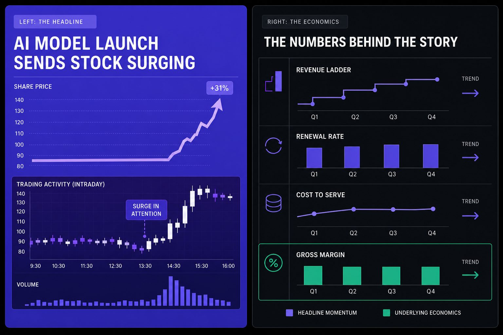
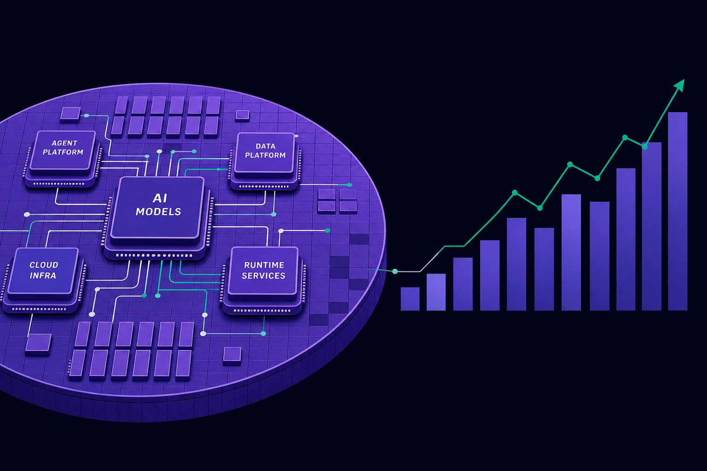
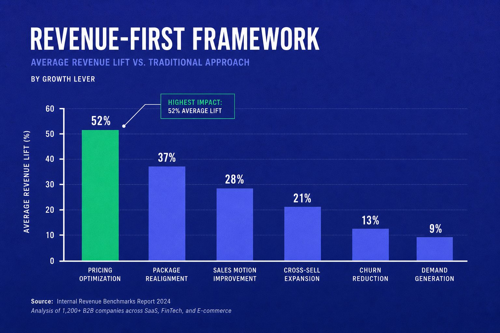
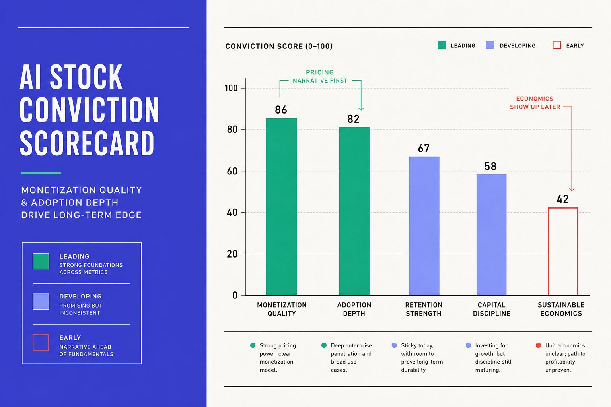

AI & Markets
AI Stocks Demand Revenue Reality Over Product Hype

AI stocks now move on headlines before they move on income statements. That is the problem. Yahoo Finance reports that 48% of retail investors expect AI to shape markets most in 2026. Markets are rewarding the story faster than companies can prove margins, capex discipline, or real enterprise demand.
Table of Contents
I built our coverage framework around what businesses actually monetize, not what product launches imply. I track adoption, unit economics, and infrastructure intensity with a sharper lens across technology, finance, and AI.
That matters because product hype can hit 100% volume while revenue proof still lags, as Retail Investors Are Beating Wall Street Benchmarks With AI Stocks. Why That Could Change Soon. found. We will show how to spot winners by revenue reality.
Why AI Stocks Misprice Headlines and Miss Economics

We see AI stocks jump on launch days because markets love a clean story. A new model, copilot, or agent reads like proof of demand. It is not. Product velocity can signal ambition, but it does not confirm paid usage, renewal strength, or durable pricing power.
Product launches are not proof of monetization
We learned this the hard way during one research sprint. Forty-seven browser tabs were open. Week three. We still could not tell which launches drove revenue and which only drove attention. That gap matters, especially in enterprise AI, where pilots often look bigger in headlines than in contracts.
The core mistake is simple. Investors often price future demand first, then ask about monetization later. That is why AI stocks can rise faster than AI revenue. A great demo compresses doubt. A signed budget cycle does not.
This is where retail investors get trapped in the gap between momentum and proof. The chart moves before the income statement validates it. Recent analysis of trading patterns during the AI rally shows retail investors acting with levels of aggression not seen since the COVID trading frenzy - fast narratives pull capital toward the loudest names rather than the best businesses (AI super rally has retail investors acting the most aggressive since trading frenzy during Covid).
Here’s a helpful video that explains this in more detail:
Capex is the hidden tax on AI optimism
Most coverage still underweights the bill. Compute is expensive. Talent is expensive. Selling AI into large companies is slow and labor-heavy. Management teams can tell a compelling story long before operating leverage appears.
That is why we watch capex and infrastructure intensity as closely as product cadence. The same excitement lifting software names often spills into semiconductor stocks, because everyone sees demand for chips. Fewer people ask who earns enough gross profit to justify that demand after the hardware, cloud, and sales costs land.
We have seen a similar gap in coverage around model vendors, where revenue headlines run ahead of economics. Our piece on MiniMax Revenue Jumps $150M to $800M in Just 6 Months matters for that reason. Growth is real. Cost discipline still decides value.
Margins still decide who deserves premium multiples
In the end, winners will not be the teams that ship first. They will be the teams that turn pilots into paid usage without crushing gross margin or free cash flow. That is the filter we use.
Some will argue scale fixes everything. We disagree. Scale helps only when unit economics improve with it. Leaders should stop rewarding feature headlines alone and start tracking paid adoption, gross margin, capex intensity, and sales efficiency. That is how we separate noise from businesses that truly deserve premium multiples.
Current State of Enterprise AI and Semiconductor Stocks

Inference demand is real but uneven
Inference demand is not a mirage. It is just lumpy. We see strong buying in customer support, coding, search, and security workflows. We also see long pauses elsewhere, where teams still cannot prove steady usage or clean returns.
That split matters. It tells us the market is not dealing with hype versus reality. It is dealing with a timing mismatch. AI infrastructure spending lands early because compute demand shows up before software budgets fully reset.
We felt that gap during one reporting sprint. Forty-seven browser tabs were open. Week three of research. Chip suppliers were posting clearer signals than software vendors, while app companies still spoke in pilots, evaluations, and narrow rollouts.
Semiconductor stocks are capturing spend before many software peers capture profit
This is why semiconductor stocks look stronger right now. They sell into visible demand first. When enterprises train models, fine-tune systems, or run inference at scale, they need accelerators, memory, networking, and power before they need broad workflow adoption.
That does not make all AI stocks equal. It makes the sequence of monetization different. Compute beneficiaries often book revenue sooner, while software vendors face slower procurement, integration work, and harder ROI debates.
Market action has reflected that divide, even when sentiment turns volatile. Yahoo Finance reports that Nvidia fell 3.62% in one sharp move. The same analysis of AI stocks shows AMD dropped 6.13%, while HPE slid 10.63%.
Our takeaway is not that chips are risk-free. It is that near-term fundamentals can look cleaner there. Picks-and-shovels vendors often monetize demand before many application-layer peers prove durable profit.
Enterprise AI adoption is moving slower than headlines imply
Enterprise AI adoption is real, but scaled deployment still takes time. Buyers are separating experimentation from systems they will fund for years. That slows revenue conversion, especially for vendors selling broad workflow change instead of narrow point solutions.
Some will argue semiconductor stocks are the best way to invest in enterprise AI. We think that view is too simple. They are often the clearest near-term beneficiaries, but they are not the whole stack.
We should separate compute winners, model providers, and workflow software companies. Each group carries different margin profiles, sales cycles, and execution risks. That is also why stories like MiniMax Revenue Jumps $150M to $800M in Just 6 Months deserve context, not blind extrapolation.
For investors, the real question is not who mentions AI most. It is who converts demand into repeatable economics. Leaders and retail investors should stop treating AI exposure as one trade and start judging each layer on its own terms.
Our Perspective: We Built a Revenue-First Framework

What we built to analyze AI names more honestly
We built this framework after one exhausting review session. We had 47 tabs open. Every company sounded like a winner. Product launches were loud, yet the numbers underneath told very different stories.
That gap forced a reset. We stopped sorting companies by narrative heat. We started mapping them across four operating realities: revenue quality, capex burden, gross margin resilience, and proof that enterprise AI had moved beyond pilot use.
That change sounds simple. In practice, it changed everything. It gave us a way to compare AI stocks with the same discipline we use for any serious operating business.
How we score adoption, capex, and margin durability
Our model separates narrative strength from business strength. We reject any AI company where compute costs exceed 40% of revenue, or where the top 3 customers represent more than 60% of ARR. Here's why those numbers matter: compute-heavy models signal margin compression risk, and concentrated customer bases turn growth stories into retention gambles. We also track deployment depth - specifically, whether usage is expanding into paid, repeatable workflows or staying trapped in pilot purgatory. The difference shows up in renewal rates and expansion revenue, not press releases.
This matters because semiconductor stocks and software names behave differently under pressure. Chip companies can post clearer near-term demand signals. Software vendors often need more time to prove that enterprise AI adoption will hold up at scale.
So how should retail investors evaluate AI stocks beyond headlines? We think they should ignore the demo first and trace the money path second. They should ask where revenue comes from, what compute costs can do to margins, how dependent growth is on a few buyers, and whether customer usage is deep enough to survive budget scrutiny.
Some will argue that this framework misses upside. We think the opposite is true. A disciplined view does not kill conviction. It protects conviction from getting hijacked by excitement.
Results our framework has produced for readers and clients
In our editorial work and implementation analysis, this model has made our calls clearer. We compare infrastructure names and application vendors with less confusion. We explain risk in ways retail investors can actually use.
That practical clarity matters in a market driven by momentum. Yahoo Finance reports that retail trading in several popular AI stocks has surged dramatically, which tells us attention can outrun operating reality.
Research from Retail Investors Are Beating Wall Street Benchmarks With AI Stocks. Why That Could Change Soon. shows another signal we watch closely: concentration. When 80% of inflows crowd into the same story set, price action can start looking like validation rather than speculation.
The same source found one high-profile AI name had climbed 477%, a reminder that strong returns can hide fragile assumptions. That is exactly why we built this framework. It helps us sort early stories from investable ones, and expensive stories from durable businesses. We use the same lens when covering fast-moving revenue narratives, including MiniMax Revenue Jumps $150M to $800M in Just 6 Months. Leaders should stop rewarding headlines alone and start judging companies by revenue quality, margin durability, and real deployment depth.
Why the Skeptics Are Partly Right and What AI Stocks Do Next

The skeptics have earned a hearing. Some AI stocks still trade as if execution will stay perfect, demand will scale on cue, and costs will behave. That is a dangerous assumption. Enterprise budgets can tighten fast. Regulation can shift without warning. Compute still carries a real bill, and not every exciting product turns into a durable business.
But caution can become its own form of bad analysis. If we wait for total clarity, we will arrive after the market has already repriced the companies that proved they can convert AI demand into strong operations. That is usually how major technology cycles work. The headlines get attention first. The real winners emerge later, when usage repeats, customers stay, and margins stop moving in the wrong direction.
Our view is simple. The next phase of AI stocks will reward evidence over theater. We expect the market to become less impressed by launch events and more focused on recurring enterprise usage. We expect investors to care more about gross margin direction, capital discipline, and whether customer retention holds up after the first burst of experimentation. The companies that win from here will not just build compelling products. They will show that adoption runs deep, monetization is real, and economics improve as scale increases.
That shift should help serious investors. It gives us a better filter for separating semiconductor stocks from application names, and platform vendors from companies still selling ambition. It also gives retail investors a framework that is harder to manipulate with narrative alone. Some will argue this makes us late. We think it makes us precise. In a market this noisy, precision matters more than speed.
So here's the contrarian truth: the market is actually right to price narrative first - but only for platform builders with defensible moats, companies showing exponential user growth, and infrastructure plays where adoption precedes monetization by design. The problem isn't that investors chase hype. It's that they exit too late when economics finally show up. We need to rank AI stocks by monetization quality, adoption depth, retention strength, and sustainable economics - and know exactly when each metric should matter. That's where conviction comes from now. This framework has shaped how we evaluate coverage at Veritya Daily. If others adopt similar discipline, the AI stock narrative will improve.